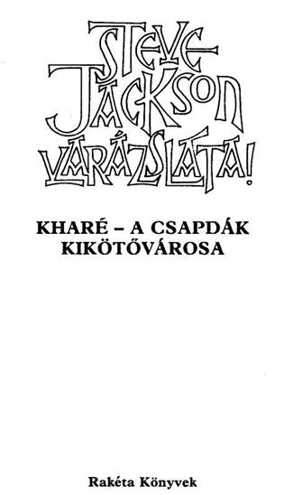
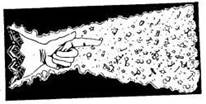
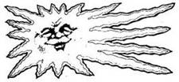
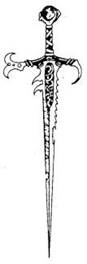
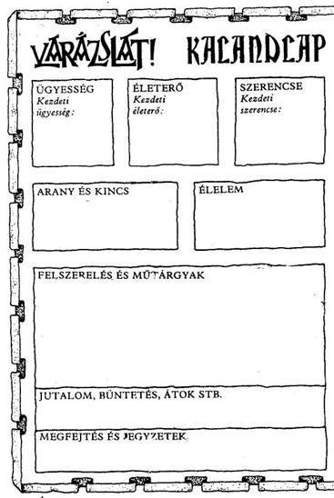
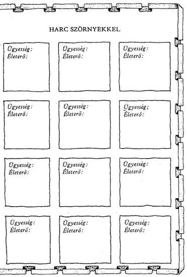
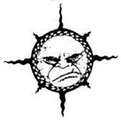
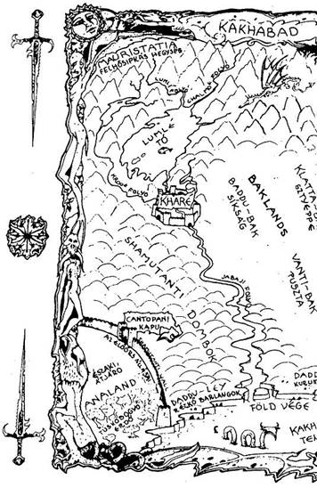
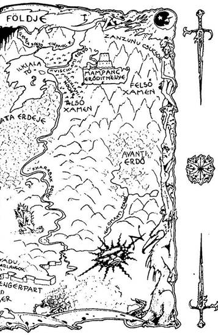
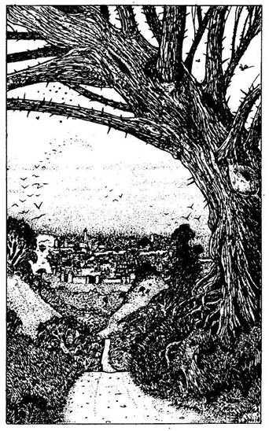

A mű eredeti címe:
SORCERY
Kharé - Cityport of Traps
Első kiadás:
Penguin Books 1984
Fordította:
Varsányi Mária
John Blanche illusztrációival
Copyright © Steve Jackson, 1984
Illustrations copyright © John Blanche, 1984
Hungarian translation © Varsányi Mária, 1992
Bevezetés
Kharé - a Csapdák Kikötővárosa a Kaland-Játék-Varázslat sorozat második kötete, amely a Shamutanti dombokat követi. Ennek a sorozatnak egyes köteteit azonban külön-külön is játszhatjátok, anélkül hogy az előző kötetet ismernétek.
Kharé valójában kerek történet önmagában is. Az új játékosok a könyvben megtalálják az összes információt, valamint a Kalandlapot, amelyre a játékhoz szükségünk lesz. Azok az olvasók viszont, akik a kalandsorozat második állomásánál tartanak, nyugodtan átugorhatják a játékszabályt, és azonnal belevághatnak a történetbe, amely kalandozásunk második színhelyére vezeti őket.
Előszó
Hősies kaland előtt állsz - meg kell szerezned a Királyok Koronáját. Otthonodból, Analandból indulsz Kakhabad zord vidékén át egészen Mampang erődjéig, ahol a féltve őrzött korona található. Ebben az egyszemélyes fantasztikus szerepjátszó könyvben választhatsz, hogy varázsló vagy harcos leszel-e. Ha harcos akarsz lenni, egy igen egyszerű harci szisztémát követve gyorsan és hatásosan sikerül megküzdened Kakhabad különböző teremtményeivel. Ha a varázsló szerepét vállalod, el kell sajátítanod egy egészen egyedülálló varázsszisztémát. Mint a nagy varázslóknak általában, neked is meg kell tanulnod a varázslatokat!
A könyv végén megtalálod a Varázslatok Könyvét, melyet át kell tanulmányoznod, mielőtt utadnak nekivágnál. Nem kell megtanulnod az összes varázslatot, hiszen azokat csak a Birodalmi Mágus ismeri egyedül. Körülbelül hat varázslat ismerete elegendő lesz ahhoz, hogy nekikezdhess kalandodnak.
Mindegy, mit választasz, varázsló avagy harcos leszel, utad egyformán veszélyes lesz: számos csel, csapda, gond és veszély leselkedik majd rád - nem beszélve a temérdek gonosz teremtményről, akik majd megpróbálják megakadályozni, hogy elérd célodat.
A könyv által felkínált számos lehetőség közül mindig te választod ki azt, hogy melyik úton mész tovább, harcolsz-e, vagy inkább megfutamodsz, ha harcra kerülne sor, s te döntöd el, miképp oldod meg az előtted álló feladatot. Ha elér a halál, kalandodat újra kell kezdened. De ha ügyes vagy és a szerencse - no meg istennőd - veled van, sikerül élve eljutnod a mampangi erődbe.

Játék kezdőknek és haladóknak
A kezdők, ha akarják, egyszerűen, varázslás nélkül kezdhetik a játékot. A karddal és egyéb harci eszközökkel folytatott harc szabályai épp olyanok itt is, mint a többi eddig megjelent Kaland-Játék-Kockázat könyvben, dobókocka segítségével és csak fegyverrel harcolsz a teremtmények ellen.
A gyakorlottabb játékosok azonban valószínűleg szívesen megpróbálkoznak egy magasabb fokozatú játékkal, melyben a harckészség kissé korlátozottabb, és a leghatásosabb fegyver maga a varázslás tudománya lesz - olyan eszköz, melynél nem létezik hatásosabb! A magasabb fokozatú játékot valójában igen könnyű elsajátítani. A kezdőknek sincs okuk rá, hogy ne próbálkozzanak meg azonnal a varázslással. A varázslatokat azonban a Varázslatok Könyvéből meg kell tanulni, s ez némi időt vesz majd igénybe. Minden játékos maga dönti el, milyen módját választja a játéknak, miképp vág bele a kalandokba.
Hogyan küzdj meg
Kakhabad teremtményeivel?
Mielőtt belevágnál ebbe a kalandba, fel kell mérned adottságaidat. A 18-19. oldalon találod a Kalandlapot, melyen folyamatosan jelölheted "egyéni jellemzőidet" és kalandod részleteit. Ugyanitt jelölöd ÜGYESSÉG, ÉLETERŐ és SZERENCSE pontjaidat is, valamint mindazokat a felszerelési tárgyakat, kincseket és egyéb szerzeményeket, melyeket utad során találsz majd. Minthogy ezek az adatok a játék során folyamatosan változni fognak, tanácsos a Kalandlapról fénymásolatot készíteni, vagy ceruzával írni rá, hogy azt újabb kalandjaid során is használni tudd.
ÜGYESSÉG, ÉLETERŐ ÉS SZERENCSE
Dobj egy kockával. Ha a harcos szerepét választottad (az egyszerű játékot játszod), adj 6-ot a dobott számhoz, és az összeget írd be a Kalandlap ÜGYESSÉG négyzetébe. Ha a varázsló szerepét választottad (a magasabb fokozatú játékot játszod), csupán 4-et adj a dobott számhoz, és az összeget írd be a Kalandlapra. A varázslók gyengébben küzdenek, mint a harcosok, viszont ezt a hiányosságukat varázslótudományukkal ellensúlyozzák.
Dobj mindkét kockával, és az eredményhez adj 12-t, majd a kapott számot írd be az ÉLETERŐ négyzetbe.
Van egy SZERENCSE rovat is. Ehhez egy kockával dobj, és 6-ot adj az eredményhez, majd az összeget írd be a SZERENCSE négyzetbe.
Különböző okok miatt, melyeket majd részletesen elmagyarázunk, ÜGYESSÉG, ÉLETERŐ és SZERENCSE pontjaid a kalandok során folyamatosan változni fognak. Pontosan kell vezetned őket, ezért azt tanácsoljuk, hogy kis betűkkel írj a négyzetekbe, vagy tarts kéznél radírt. De soha ne töröld ki a Kezdő pontjaidat, mert szerezhetsz ugyan további ÜGYESSÉG, ÉLETERŐ és SZERENCSE pontokat, de összegük soha nem lépheti túl a Kezdeti értéket, kivéve azokat a ritka eseteket, amikor erre külön utasítást kapsz.
ÜGYESSÉG pontjaid kardvívó tudásodat és általános harckészségedet mutatják. Nem árt minél több ilyen pontra szert tenni.
ÉLETERŐ pontjaid jelzik kondíciódat, akaraterődet, hogy túlélj egy-egy
helyzetet, továbbá eltökéltségedet és állóképességedet; minél magasabb az ÉLETERŐ pontszámod, annál hosszabb ideig maradhatsz életben. SZERENCSE pontjaid mutatják, mennyire vagy szerencsés ember. A szerencse és a varázslat az úr abban a fantasztikus birodalomban, amelybe most behatolsz.
A CSATA
Sűrűn találsz majd olyan oldalakat, ahol azt az utasítást kapod, hogy küzdj meg valamilyen ellenféllel. Nemegyszer lehetőséged nyílik majd arra is, hogy elmenekülj, de ha nem élsz ezzel a lehetőséggel, vagy mindenképpen úgy döntesz, hogy megvívsz a teremtménnyel - úgy a csata a következőképpen zajlik:
Először jegyezd fel ellenfeled ÜGYESSÉGÉT és ÉLETEREJÉT a Kalandlap első üres Harc Szörnyekkel feliratot viselő rovatába. Ellenfeleid pontszámait minden alkalommal megadja a könyv, amikor összecsapsz valamelyikükkel.
A harc menete
CSATA EGYNÉL TÖBB TEREMTMÉNNYEL
Előfordul majd néha, hogy egynél több személy vagy ellenfél támad rád. Ilyenkor a könyv adja majd meg az utasítást, hogyan küzdj meg velük. Néha úgy kell megküzdened velük, mintha csak egy ellenféllel harcolnál, néha pedig külön-külön csapsz össze velük.
SZERENCSE
Kalandjaid során, akár csatában, akár olyan helyzetekben, amikor a SZERENCSE dönthet sorsod felől (az erre vonatkozó utasítást az adott fejezetpontok alatt megkapod), a SZERENCSÉDRE is számíthatsz, hogy az események kimenetele számodra kedvező legyen. De vigyázz! A SZERENCSÉRE számítani kockázatos, és ha balszerencsés vagy, az eredmény végzetes lehet.
SZERENCSÉDET a következő módon tedd próbára. Dobj mindkét kockával. Ha a kapott összeg ugyanannyi vagy kevesebb, mint jelenlegi SZERENCSE pontszámod, az eredmény kedvező. Ha magasabb számot dobsz, mint jelenlegi SZERENCSE pontszámod, balszerencséd volt, és vállald a következményeit.
Úgy hívjuk ezt, hogy "Tedd próbára a SZERENCSÉDET!". Amikor ezt teszed, minden alkalommal le kell vonnod 1 pontot SZERENCSE pontszámodból. Így hamar rájössz, hogy a SZERENCSÉRE hagyatkozni kockázatos.
A SZERENCSE HASZNÁLATA CSATÁBAN
A könyv bizonyos oldalain felszólítunk, hogy Tedd próbára a SZERENCSÉDET, és közöljük, hogy SZERENCSÉD volt-e vagy sem. A csatákban viszont mindig te döntesz, hogy a SZERENCSÉD segítségével megpróbálsz-e komolyabb sebet ejteni azon az ellenfeleden, akit éppen megsebeztél, vagy csökkenteni próbálod-e annak a sebnek a hatását, amelyet ellenfeledtől elszenvedtél.
Ha megsebezted ellenfeledet, a fent leírt módon Tedd próbára a SZERENCSÉDET! Ha SZERENCSÉS vagy, komoly sebet ejtettél rajta, és 2 külön pontot levonhatsz ellenfeled ÉLETEREJÉBŐL. Azonban ha nincs SZERENCSÉD, vagy a seb puszta karcolás, 1 pontot vissza kell adnod ellenfeled ÉLETERŐ pontjaihoz. (Tehát a szabályos 2 pont levonás helyett most csak 1 pontot vonhatsz le tőle.)
Ha ellenfeled sebzett meg téged, azért Tedd próbára a SZERENCSÉDET, hogy enyhítsd a sebet. Ha SZERENCSÉD van, sikerült elkerülnöd a teljes csapást. 1 pontot visszaadsz magadnak (2 pontos kár helyett csak 1 pontos kár keletkezett az ÉLETERŐDBEN). Ha nem voltál szerencsés, komolyabb találat ért, plusz 1 ÉLETERŐ pontot vonj le magadtól.
Ne feledd, hogy minden alkalommal le kell vonnod 1 pontot adott SZERENCSE pontszámodból, ahányszor próbára teszed a SZERENCSEDET!
AZ ÜGYESSÉG, ÉLETERŐ ÉS SZERENCSE
VISSZAÁLLÍTÁSA A KEZDETI ÉRTÉKRE
ÜGYESSÉG pontjaid nem sokat fognak változni kalandjaid során. Helyenként, egy-egy oldalon olyan utasítást találsz, hogy növeld vagy csökkentsd ÜGYESSÉG pontjaid számát. Egy Varázsfegyver növelheti ÜGYESSÉGEDET, de ne feledd, hogy egyszerre csak egy ilyen fegyvert használhatsz! Nem kaphatsz 2 jutalom ÜGYESSÉG pontot, amiért két Varázsfegyvered van. ÜGYESSÉG pontjaid száma soha nem haladhatja meg a Kezdeti értéket, hacsak erre külön utasítást nem kapsz.
ÉLETERŐ ÉS ÉLELMISZER
ÉLETERŐ pontjaid sokszor fognak változni kalandjaid során, miközben harcolsz és lelkesítő feladatokat vállalsz. Ahogy célodhoz közeledsz, ÉLETERŐ pontjaid száma veszélyesen csökkenhet, és a csaták különösen kockázatossá válnak, ezért légy óvatos! Hátizsákodban két étkezésre elegendő Élelmiszer van. Csak akkor állhatsz meg pihenni és enni, ha erre külön utasítást kapsz, és csupán egy adag élelmet fogyaszthatsz el minden ilyen alkalommal. Minden étkezésed után annyival növeld ÉLETERŐ pontjaid számát, amennyit a könyv utasításként megad. Ne feledd, hogy hosszú utat kell megtenned, ezért bölcsen használd fel Élelmiszerkészletedet! Azt se feledd, hogy ÉLETERŐ pontjaid száma sohasem haladhatja meg a Kezdeti értéket, hacsak erre külön utasítást nem kapsz.
SZERENCSE
SZERENCSE pontjaidhoz továbbiakat szerezhetsz kalandjaid során, ha kivételesen SZERENCSÉS vagy. Ennek részleteit megtalálod a könyvben. Ne feledd, hogy az ÜGYESSÉGHEZ és az ÉLETERŐHÖZ hasonlóan SZERENCSE pontjaid sem léphetik túl kezdeti értéküket, kivéve, ha egy-egy oldalon ezt az utasítást kapod.
ÜGYESSÉG, ÉLETERŐ és SZERENCSE pontjaidat mindig visszaállíthatod a Kezdeti értékre, ha istennőd segítségét kéred (lásd később).

Mit tegyünk,
ha nincs kéznél dobókocka?
Ha nincs dobókockád, használd a könyv oldalainak aljában feltüntetett dobókockákat Oly módon, hogy végigpörgetve a lapokat hirtelen megállsz, és az éppen nyitott oldal aljában lévő kockák számát használod. Ha csak egy kockával kell dobnod, úgy a berajzolt dobókockák közül az első számát használd. Ha két kockával kell dobnod, úgy a két kocka összegét használd.

Varázslók:
Miként használjuk a varázslatokat?
Ha úgy döntesz, varázsló leszel, kalandjaid során lehetőséged nyílik rá, hogy varázsolj. A varázslatok Könyvében, melyet a játékkönyv végén találsz, felsoroljuk mindazokat a varázslatokat, amelyeket Analand varázslói jól ismernek és használnak. Mielőtt kalandjaidba belevágnál, ezeket alaposan át kell tanulmányoznod. Minden varázslatnak egy hárombetűs kódja van, s arra kell törekedned, hogy minél több kódot és a hozzá tartozó varázslatot megtanuld. Minden varázslat csökkenti az ÉLETERŐDET, és ha varázsolsz is, azért még külön ÉLETERŐ pontot kell fizetned - ez lesz a varázslat ÁRA. Az ajánlott alapvarázslatokkal gyorsan előrejutsz, viszont ezek nem igazán gazdaságosak; egy gyakorlott varázsló ezeket a varázslatokat csupán akkor fogja használni, ha ismeretlen varázslatok közül kell választania, vagy ha nem találja meg azt a tárgyat, amellyel egy kevésbé költséges varázslatot el tud végezni.
A varázslatokra vonatkozó használati utasítást megtalálod a Varázslatok Könyvében.
EGYET AZONBAN NE FELEDJ! Miután belekezdtél kalandodba, már nem használhatod a Varázslatok Könyvét!
Libra - az igazságosság istennője
Kalandjaid során saját istennőd, Libra oltalmaz. Kilátástalan helyzetekben mindig segítségért fordulhatsz hozzá, de minden egyes kalandban csupán egyszer kérheted a segítségét. Ha a Shamutanti dombok között egyszer már segítségért fordultál hozzá, legközelebb csak akkor teheted meg ugyanezt, ha eléred Kharét.
Háromféleképpen segíthet neked:
Újraélesztés: Bármikor megkérheted, hogy állítsa vissza a Kezdeti értékre ÜGYESSÉGEDET, ÉLETERŐDET és SZERENCSÉDET. Erre a szövegben nem kapsz külön lehetőséget, tőled függ, akarod-e ezt egyáltalán, azt azonban ne feledd, hogy ezt egy kaland során csak egyszer teheted meg.
Menekítés: Amikor szorult helyzetben vagy, a szöveg alkalmanként lehetőséget ad rá, hogy segítségül hívd Librát.
Átkok és betegségek megszüntetése: Istennőd bármilyen átoktól vagy betegségtől megszabadít, melyet utad során szerzel. Erre a szövegben nem kapsz külön lehetőséget, te döntöd el, akarod-e egyáltalán. Azt azonban ne feledd, hogy egy kaland során erre csak egyszer van lehetőséged.
Felszerelés és élelmiszer
Kalandodat csak a legszükségesebb felszerelési tárgyakkal kezded. Van egy kardod és egy hátizsákod, melybe a felszerelésedet: kincseidet, különböző tárgyaidat és élelmedet teszed. A varázslatok Könyvét nem viheted magaddal, mert Analand varázslói nem kockáztathatják meg, hogy az Kakhabadban avatatlan kezekbe kerüljön. Így aztán, miután utadnak nekivágsz, egyszer sem fordulhatsz segítségért ehhez a könyvhöz.
Övedre csatolva egy erszényben 20 Aranytallér lapul, amely az összes ismert vidék elfogadott pénzegysége. Pénz kell majd az élelemre, szállásra, vásárlásokra és megvesztegetésre, s a 20 Aranytallér nem fog sokáig tartani. Utad során igyekezned kell több pénzre szert tenni.
Élelmiszerkészleted (étel és ital) csupán két étkezésre elegendő. Amint azt majd tapasztalni fogod, az élelem igen fontos, ezért igencsak meg kell fontolnod, miképp használd fel. Sose pazarold az ételt: nem engedheted meg, hogy kifogyj belőle.


A varázslás szabályai
Kiképzésed alatt számos varázslatot, varázsigét tanítottak meg neked, melyeknek küldetésed során majd hasznát veheted. A varázslatok teljes listáját e szabályzat után megtalálod.
A varázslatokat minden esetben három betűből álló kóddal jelöljük. A könyvben nemegyszer lehetőséget kapsz majd arra, hogy problémáidat varázslattal oldd meg, és ellenfeleidet azok segítségével küzdd le. A varázslatokat kizárólag ezekkel a három betűből álló kódokkal jelöljük, ezért igen fontos, hogy közülük legalább néhányat tanulj meg kívülről.
Éppen ezért, mielőtt kipróbálnád varázserődet, jól teszed, ha egy kis időt arra fordítasz, hogy megtanuld a varázslatokat, éppúgy, ahogy azt a valódi varázslók teszik, amikor a varázstudományokat sajátítják el. Természetesen nem leszel képes egyszerre mind a negyvennyolc varázslatot kívülről megtanulni, de minél többet fogod lapozgatni a könyvet, annál inkább megismered a leghasznosabb varázslatokat.
Kezdetben csak hat-tíz varázslatot próbálj meg elsajátítani (alább közöljük a leghasznosabbakat), és bízd magad kardvívó tudományodra, ha meg kell küzdened valamilyen teremtménnyel. Kis szerencsével és ezekkel a varázslatokkal sikerülhet küldetésed, de természetesen könnyebb dolgod lesz, ha minél több varázslatot fogsz ismerni.
Néhány varázslatot bizonyos tárgyak, például egy ékszer vagy egy varázsgyűrű segítségével tudsz majd csak alkalmazni.
Ha egy varázslatot anélkül próbálnál meg használni, hogy rendelkeznél a hozzá szükséges tárggyal, a varázslat nem fog működni, és csak hiába vesztegeted majd ÉLETERŐ pontjaidat.
Minden varázslás - akár sikeres, akár nem - igénybe fogja venni energiádat és figyelmedet. Ezért fizetni kell: az árat ÉLETERŐ pontokban kifejezve minden varázslat mellett megtalálod. Amikor majd varázsolsz, ezt a pontszámot minden alkalommal le kell vonnod ÉLETERŐDBŐL.
Mielőtt kalandodba belevágnál, annyi ideig tanulmányozhatod a Varázslatok Könyvét, ameddig csak akarod, de ha egyszer már útra keltél, soha többet nem lapozhatsz bele, és kizárólag a memóriádra hagyatkozhatsz!
Le sem írhatod a varázslatokat, hogy megkönnyítsd a dolgodat. Valódi vészhelyzetekben, amikor majd meglep valamilyen teremtmény, nem lesz időd átlapozni a Varázslatok Könyvét, hogy kikeresd a legmegfelelőbb varázslatot!
A HAT LEGHASZNOSABB VARÁZSLAT
________________________________________________________
Kód Hatás ÉLETERŐ ár
EME Villámot varázsol, mely az ujjhegyből lövell ki 4
ERŐ Védelmező erőteret képez 4
TIV Lehetővé teszi a teremtmények irányítását 4
BUT A teremtményeket különösen esetlenné teszi 4
MEL Tűzgolyót varázsol, mellyel megcélozható
az ellenség 4
FAL Falat képez, mely megvéd bármilyen tárgytól
vagy teremtménytől 4
Az EME és a MEL igen erős támadó varázslat, az ERŐ és a FAL mindenre alkalmazható védővarázslat, míg a BUT és a TIV varázslat akkor lesz majd hasznos, ha furfangos helyzetekbe kerülsz. Ezek a varázslatok gyakran többre képesek, mint amire szükséged lesz bizonyos helyzetekben - és meglehetősen sok ÉLETERŐ pontba kerülnek -, de igen sokoldalúan alkalmazhatók. Minél több varázslatot fogsz megtanulni a Varázslatok Könyvéből, annál könnyebb lesz majd a leggazdaságosabb és egyszersmind a leghatásosabb varázslatot kiválasztanod.
Olvasd végig még egyszer a fenti listát, majd takard le a kezeddel a Hatás részt. Hány varázslatra emlékszel? Ha már kívülről tudod az összeset, nekikezdhetsz küldetésednek.
Miként használjuk a varázslatokat?
Miután megismerkedsz a Varázslatok Könyvében lévő varázslatokkal, ügyességed és tehetséged a sokszorosára növekszik.
Amint a hat alapvarázslatot elsajátítod, azonnal belekezdhetsz a játékba. Segítségükkel túljuthatsz minden nehézségeit, de ne feledd, ezek a varázslatok drágák (sok ÉLETERŐ pont az áruk), épp ezért gyakran fogsz rászorulni arra, hogy - főleg a gyengébb teremtmények ellen - kardvívó tudásodra hagyatkozz, s így megelőzd ÉLETERŐ pontjaid rohamos fogyását.
A többi varázslat ugyan gazdaságosabb, bár mint lehetőséget ritkábban ajánljuk őket, így varázslóként inkább az emlékezetedre és ügyességedre kell majd hagyatkoznod. A leggazdaságosabb varázslatok azok, amelyekhez a kalandod során talált varázstárgyakra van szükség.
Ne feledd, hogy kemény büntetést kell fizetned, ha rossz varázslatot választasz! Ha olyan varázslat mellett döntesz, amely nem létezik, vagy amelyhez nincs meg a szükséges varázstárgyad, külön ÉLETERŐ pont büntetést kell levonnod magadtól. Bizonyos esetekben a büntetésed halál lesz!
A Varázslatok Könyvében szereplő varázslatok közül nem mindegyiket használhatod ebben a játékban.
Csakhamar magad is rájössz majd a varázslatok értelmére. Összeállításukban, a megadott lehetőségekben és a kódokban bizonyos logika is szerepet játszik. Erre azonban magadnak kell majd rájönnöd. Minél nagyobb gyakorlatra teszel szert, annál ügyesebben fogsz varázsolni. Mindez része a varázslás művészetének!
EME
Rendkívül hatásos varázslat, segítségével villámot lövellhetünk ki a kezünkből egy meghatározott irányba. Gyakorlatilag minden olyan élő teremtmény ellen használható, amelynek nincs varázsvédelme. Igen nagy erő és koncentráció kell hozzá.
ÁRA 4 ÉLETERŐ pont
MEL
Ezzel a varázslattal óhajunknak megfelelő irányba csaphatunk le. A kezünkbe varázsolt tűzgolyót a kívánt célpont felé hajíthatjuk el. Bármely mágikus erővel rendelkező vagy közönséges teremtmény ellen felhasználható, hacsak az eredendően nem képes a tűznek ellenállni. Az ilyen tűzgolyó becsapódásakor komoly égési sérüléseket ejt, de ezt követően szinte azonnal semmivé foszlik.
ÁRA 4 ÉLETERŐ pont
ERŐ
Ez egy olyan hatásos varázslat, melynek segítségével mágikus és valóságos védőgyűrűt vonhatunk magunk köré, és ezáltal távol tudjuk tartani valamennyi ellenfelünket, legyen az valódi vagy akár mágikus erejű lény. Varázslatához rendkívüli szellemi összpontosításra van szükség, de az általa teremtett igen erős erőtér engedelmeskedik létrehozója akaratának, aki engedélyezheti ennek az erőtérnek akár egy, akár több irányba történő áthatolását.
ÁRA 4 ÉLETERŐ pont
FAL
Aki ezt a varázslatot alkalmazza, az láthatatlan falat varázsolhat maga köré, amelyen sem tárgyak, sem teremtmények nem hatolhatnak át. Igen hatásos védővarázslat!
ARA 4 ÉLETERŐ pont
TIV
Ezzel a varázslattal ellenőrzésünk alá lehet vonni a bennünket megtámadó teremtmény akaratát. A támadás megszűnik, és a teremtmény akarata azonnal a varázsló személy irányítása alá kerül. Meg kell azonban jegyeznünk, hogy ez a varázslat kizárólag a nem intelligens teremtményekre van hatással, és igen rövid életű.
ÁRA 4 ÉLETERŐ pont
BUT
E varázslat hatására az a teremtmény, amely valamilyen tárgyat (pl. fegyvert) tart a kezében, lomhává, lassúvá, esetlenné válik. A tárgyat kiejti a kezéből, majd ügyetlenkedve felveszi, és ismét kiejti - azaz mindaddig, amíg e varázslat hatása alatt áll, nem képes kárt tenni egyetlen tárggyal sem a varázslóban.
ÁRA 4 ÉLETERŐ pont
NÖV
Aki ezt a varázslatot alkalmazza önmagán, annak teste az eredeti méretének négyszeresére fog megnövekedni, egyúttal hatalma is megnő. Különösen a nagy termetű ellenfelek ellen hasznos ez a varázslat, de óvatosan kell bánni vele, különösen zárt helyen.
ÁRA 2 ÉLETERŐ pont
LÁP
Ehhez a varázslathoz egy érmére van szükség. A varázsló az érmét a csuklójára helyezve varázsol. A bűvös érme hozzátapad a csuklójához, és egy körülbelül egy méter átmérőjű láthatatlan pajzsot képez, amely megvédi a varázslót ellenfelétől, aki közönséges fegyverrel támad rá. A varázslat után ezt az érmét eredeti funkciójának megfelelően (pénz, medál stb.) nem lehet használni.
ÁRA 1 ÉLETERŐ pont
NYI
Ezzel a varázslattal bármilyen bezárt ajtót ki lehet nyitni. A zár nyelve kipattan, és az ajtó könnyedén kinyílik. Ha az ajtó belülről van elreteszelve, a retesz is kinyílik. Csupán a bűvös zárral lezárt ajtók ellen nem használható ez a varázslat.
ÁRA 2 ÉLETERŐ pont
PÉL
Ehhez a varázslathoz méhviaszra van szükség. Ha ezzel a viasszal kenjük be azokat a fegyvereket, amelyeknek éle van (kardot, baltát, tőrt stb.), azok borotvaélesek lesznek, és a szokásosnál kétszer nagyobb kárt tesznek, azaz, ha a normál fegyver eddig 2 ÉLETERŐ pont kárt okozott, most 4 ÉLETERŐ pont kárt fog okozni.
ÁRA 1 ÉLETERŐ pont
CSA
Ezt a varázslatot akkor alkalmazzuk, ha valamilyen csapda gyanúja áll fenn. A varázsló telepatikus úton megérzi, kell-e tartania csapdától vagy sem, és ha igen, hogyan lehet azt elkerülni. Ha pedig már valaki benne van a csapdában, akkor ez a varázslat bizonyos esetekben enyhíti annak veszélyes voltát.
ÁRA 2 ÉLETERŐ pont
HAT
Ezt a varázslatot önmagunkon végezzük. Hatására éppolyan hasonmásaink jelennek meg mellettünk, mint amilyenek mi vagyunk, éppúgy tudnak varázsolni vagy harcolni, és mind egyformán fognak cselekedni, mintha csak egymás tükörképei lennének. A legtöbb teremtmény képtelen lesz megállapítani ilyen esetben, ki a valódi ellenfél, és mind a hat hasonmás ellen fog harcolni.
ÁRA 2 ÉLETERŐ pont
TÁN
Akivel szemben ezt a varázslatot alkalmazzuk, az ellenállhatatlan vágyat fog érezni arra, hogy táncra perdüljön. A varázsló kis Bambuszfurulyáján játszva minden teremtményt megtáncoltat. Csupán ezt a Bambuszfurulyát kell megtalálni, és mindaddig, amíg ezen játszunk, a kiszemelt teremtmény a táncot ropja. Normál körülmények között ilyenkor a varázsló nyugodtan elmenekülhet, vagy tovább furulyázhat, és gyönyörködhet az előadásban!
ÁRA 1 ÉLETERŐ pont
GOB
Ehhez a varázslathoz néhány Goblinfogra van szükség. Ha ezeket a fogakat megbűvöljük, abban a pillanatban annyi Goblin jelenik meg előttünk - egytől akár százig -, ahány Goblinfoggal végezzük a varázslatot. Ezeknek a Goblinoknak megparancsolhatjuk, hogy küzdjenek meg az ellenfelünkkel, vagy megbízhatjuk őket bármilyen más feladattal. Amint a Goblinok teljesítették feladatukat - eltűnnek.
ÁRA GORLINONKÉNT 1 ÉLETERŐ pont
YOB
Ehhez a varázslathoz Óriásfogra van szükség. Ha a megfelelő módon varázsolunk, azonnal egy közel kétméteres Óriás jelenik meg előttünk. A varázsló valamennyi kérését teljesíti az Óriás; megküzd az adott ellenséggel, nehéz tárgyakat mozdít el stb. Az Óriás eltűnik, amint a feladatát teljesítette.
ÁRA 1 ÉLETERŐ pont
GUM
Ehhez a varázslathoz egy fiola ragasztóra van szükség, amely rendkívül gyorsan, pillanatok alatt mindent ragaszt. Ha ezt a varázslatot alkalmazzuk, bármely teremtményt képesek leszünk odaragasztani a földhöz vagy a falhoz, mégpedig oly módon, hogy például a lába elé hajítjuk a ragasztóval teli fiolát, vagy azt egy résnyire nyitott ajtó tetejére helyezzük, ahonnan az a kiszemelt áldozat fejére esik, ha az ajtót kinyitják.
ÁRA 1 ÉLETERŐ pont
MEN
Ezt a varázslatot különösen veszélyes helyzetekben alkalmazzuk, amikor azt szeretnénk megtudni, miképp és merre tudunk elmenekülni. Ez a varázslat elirányít bennünket a megfelelő kijárathoz, vagy ha a közelben lehetőség adódik valami védelemre, egyfajta - különös lelki ráhatással arrafelé küld el.
ÁRA 2 ÉLETERŐ pont
DOK
E varázslat segítségével óhajunknak megfelelően a birtokunkban lévő varázsitalok bárkit vagy bármilyen sérült teremtményt képesek meggyógyítani, ha azok az italt megisszák. A varázsló önmagán is alkalmazhatja ezt a varázsitalt - akkor kell varázsolni, miközben az italt felhajtjuk, de az ital soha senkit nem fog a halottaiból feltámasztani.
ÁRA 1 ÉLETERŐ pont
ALV
Ezzel a varázslattal bármely teremtmény mozgását, megszokott sebességét körülbelül hatszorosan tudjuk lelassítani. Mivel az ilyen teremtmény szinte alvajáróvá válik, lehetőségünk nyílik rá, hogy míg a varázslat hat, kitérjünk előle, vagy legyőzzük.
ÁRA 2 ÉLETERŐ pont
KIN
Ezzel a varázslattal különböző kincseket tudunk teremteni: aranyat, ezüstérméket, drágaköveket és ékszereket, melyekkel bizonyos teremtmények figyelmét elterelhetjük, azokat kifizethetjük, illetve megvesztegethetjük. Az illúziókincs abban a pillanatban eltűnik, amint a varázsló elhagyja a tett színhelyét.
ÁRA 2 ÉLETERŐ pont
VAR
Ezzel a varázslattal megvédhetjük magunkat a legtöbb ellenséges varázslattal szemben. Gyorsan kell ilyenkor varázsolnunk, még mielőtt a támadó varázslat megfoganna. Egyszerűen közömbösítjük az ellenséges varázslatot, mely nem tud ránk hatni, és eltűnik. Ez a varázslat ennélfogva igen hatásos védőfegyver, azonban tudni kell, hogy nem minden varázslattal szemben működik.
ÁRA 2 ÉLETERŐ pont
POP
Nagyon hatásos kis varázslat ez, amelyhez nagy összpontosító erőre van szükség, no meg apró kavicsokra. A bűvös kavicsok azonnal robbannak, amint elhajítjuk őket. Bármit apró darabokra zúznak, ráadásul iszonyúan nagyot robbannak.
ÁRA 1 ÉLETERŐ pont
ZUH
Ezt a varázslatot akkor alkalmazzuk, ha egy verem fogságában vagyunk, vagy jókora magasságból zuhanunk le. A varázslat segítségével testünk pehelykönnyűvé válik. Könnyedén, lágyan hullunk alá a levegőben, és sértetlenül érünk földet.
ÁRA 2 ÉLETERŐ pont
ZAV
Ragyogó védővarázslat, melyet bármilyen ránk támadó teremtmény ellen alkalmazhatunk. Hatására áldozatunk agya zavarossá válik, átmenetileg beszámíthatatlan lesz. Mindazonáltal ezt a varázslatot nagy körültekintéssel kell végeznünk, mert előfordulhat, hogy a megháborodott teremtmény kiszámíthatatlan lépést tesz.
ÁRA 2 ÉLETERŐ pont
KÖD
Ezt a varázslatot kizárólag ablak nélküli, bezárt szobában alkalmazhatjuk. Amikor a varázslat hat, a szoba koromsötétté válik, és a varázslón kívül senki semmit nem fog látni, még akkor sem, ha fáklyák vagy gyertyák fénye világítaná is be a szobát. Minden teremtményt megvakít, aki csak jelen van. Hatása időleges.
ÁRA 2 ÉLETERŐ pont
HOM
Ehhez a varázslathoz homokszemeket kell szórnunk a földre (pl. egy adott teremtmény lába elé), melyek bűvös erőnktől futóhomokká válnak. Bárki belelép, azt a futóhomok elnyeli.
ÁRA 1 ÉLETERŐ pont
BŰZ
Amikor ezt a varázslatot alkalmazzuk, a körülöttünk lévő levegő iszonyatos bűzzel telik meg. Oly szörnyű ez a szag, hogy bármely teremtmény, amely akár egy keveset is beszippant belőle, azonnal hányni kezd. Ennélfogva bármilyen ellenség elgyengül a bűztől, még a varázsló is, hacsak nincs az orrában orrdugó. A nagy orrlyukú teremtményekre hat igazán nagy erővel.
ÁRA 1 ÉLETERŐ pont
TEL
Ehhez a varázslathoz egy kis Kerek Papi Sapkát kell a fejünkön viselnünk. Ha ez van a fejünkön, bármilyen lény, értelmes lény gondolatát kitalálhatjuk; megtudhatjuk, milyen erős, mi a gyengéje, mit rejt a szomszédos szoba stb.
ÁRA 1 ÉLETERŐ pont
GAK
Ahhoz, hogy ezt a varázslatot alkalmazzuk, szükségünk van egy Fekete Maszkra, melyet mindaddig az arcunkon kell viselnünk, amíg varázsolunk. Közvetlenül alkalmazhatjuk az ellenfelünkkel szemben, akit a látvány iszonyatos félelemmel tölt el. A bátor teremtmények kevésbé fognak begyulladni tőle, mint a gyávák, hatására elönthet valakit a verejték, elvesztheti a fejét, de az is előfordulhat, hogy a kiszemelt áldozat remegve, mint a kocsonya, a sarokba rejtőzik.
ÁRA 1 ÉLETERŐ pont
DEM
Ezt a varázslatot csak harcban lehet alkalmazni, és hatására az ellenfél oly mértékben demoralizálódik, hogy már nem is akar győzni. Az ilyen demoralizált teremtményeket könnyebb legyőzni - bár a győzelem még így sem teljesen biztos.
ÁRA 2 ÉLETERŐ pont
ANY
Ezt a varázslatot csak akkor alkalmazhatjuk, ha egy Arany Ékszert viselünk. Ilyenkor a közelünkben tartózkodó bármely ember vagy teremtmény azonnal vonzódni kezd hozzánk. Ez nem jelenti azt, hogy ellenfeleink nem fognak küzdeni ellenünk, ha ez a feladatuk, de könnyebben lehet majd információt kicsikarni belőlük, mint azt normális körülmények között tehetnénk. Még arra is készek lesznek, hogy segítsék azt, aki valójában az ellenségük.
ÁRA 1 ÉLETERŐ pont
TÜK
Ennek a varázslatnak harc közben lehet igazán hasznát venni. Egy Aranyhátú Tükör kell hozzá, melyet varázsláskor a teremtmény elé kell
tartanunk. A tükör segítségével az ellenünk harcoló teremtmény tökéletes tükörképét tudjuk odavarázsolni, és azt irányítva az eredeti ellenfél elleni harcra késztetjük. Azonos harci tulajdonságokkal rendelkezik mindkét teremtmény (az eredeti és a tükörbéli egyaránt), s csak a szerencse fogja eldönteni küzdelmüket. Ha az eredeti teremtmény meghal, képmása eltűnik. Akkor is eltűnik a képmás, ha a valóságos ellenfelet legyőzzük.
ÁRA 1 ÉLETERŐ pont
TÜV
Ehhez a varázslathoz a Tüzes Víz nevű italra van szükség, amely megkétszerezi, sőt megháromszorozza az erőnket. Bár e víz hatása csak időleges, mégis elegendő ahhoz, hogy egy csatát megvívjunk, vagy egyfajta szupererőre szert tegyünk.
ÁRA 1 ÉLETERŐ pont
POR
Ehhez a varázslathoz különleges Kőporra van szükség, melyet a kiszemelt teremtményre kell hintenünk. Az áldozat perceken belül kővé válik. Előbb lelassulnak a mozdulatai, majd megmerevedik és elszürkül, a teste pillanatok alatt szürke kőszoborrá merevedik.
ÁRA 1 ÉLETERŐ pont
SÁP
Ezt a varázslatot mindenki önmagán végezheti el. Hatására a normális sebességünknél háromszor gyorsabban tudunk majd futni, beszélni, gondolkodni vagy harcolni. Ez a varázslat azonban csak akkor hat, ha előtte Sárga Port szippantunk be.
ÁRA 1 ÉLETERŐ pont
FÚJ
Ehhez a varázslathoz Viharkürtre van szükségünk, amely disszonáns hangot ad, amikor egy meghatározott irányba tartva belefújunk. Varázslatunk hatására hatalmas szélvihar tör ki a kürtből, amely embernél nagyobb teremtményeket is képes felkapni, vagy egy polcról tárgyakat lefújni stb.
ÁRA 1 ÉLETERŐ pont
FIX
Ez a varázslat, mely élőkre és élettelen tárgyakra egyaránt alkalmazható, a varázslat tárgyát akár röptében is mozdulatlanná teszi. A varázslathoz Tölgyfacsemete botra van szükség. Amit ezzel a varázslattal megérintünk, megdermed, amíg a helyszínen vagyunk.
ÁRA 1 ÉLETERŐ pont
ALT
Ez a varázslat kizárólag élőlényekre hat. Elálmosodnak és perceken belül elalszanak tőle. A varázslatot egy Rézinga segítségével végezzük, melyet a kiszemelt teremtmény orra előtt lassan ide-oda lengetve hipnotizáló hatást fejtünk ki.
ÁRA 1 ÉLETERŐ pont
REP
Ehhez a varázslathoz egy Ékszerberakásos Medálra van szükségünk, melynek segítségével olyan magasra röpülhetünk fel a levegőbe, amilyen magasra csak akarunk, és addig maradhatunk ott, ameddig kedvünk tartja.
ÁRA 1 ÉLETERŐ pont
ELT
Ehhez a varázslathoz egy Gyöngygyűrűre van szükségünk. Amíg ez a gyűrű az ujjunkon van, bármely értelmes lény számára láthatatlanná válunk. Ez hatalmas előnyt jelent akár harcban, akár menekülés közben. Azok a teremtmények, amelyeknek fülük van, hallani fogják, merre mozgunk a szobában. A kevésbé értelmes lényeket csak részben tudjuk ezzel a varázslattal becsapni, hisz ez egyfajta illúzióvarázslat.
ÁRA 1 ÉLETERŐ pont
NAP
Ehhez a varázslathoz egy sárga Napékszerre van szükségünk, mely fényesen csillogni kezd, amikor varázsolunk. Mi szabályozzuk, milyen erővel csillogjon: lehet igen fényes, ha a megtámadott teremtményeket el akarjuk vakítani, vagy kevésbé fényes, ha fáklyához hasonló erejével egy sötét szobában akarunk tájékozódni.
ÁRA 1 ÉLETERŐ pont
TIL
Ehhez a varázslathoz egy Csont Karperecre van szükségünk. Amikor ezt a varázslatot alkalmazzuk, mindig valamilyen meghatározott illúzióra kell gondolnunk (pl. a padló izzó parázzsá válik, mi válunk Démonná stb.), s ez az illúzió valóságosnak tűnik majd kiszemelt áldozatunk szemében. Ilyenkor elmenekülhetünk a helyszínről, vagy akár csökkenthetjük a teremtmény ellenállását. Ez a varázslat a nem értelmes lényekre nincs hatással. Ha olyasmit cselekszünk, aminek következtében az illúzió megtörik (pl. egérré változunk és olyasvalakivel bocsátkozunk harcba, akinek kardja van), a varázslat hatása azonnal megszűnik.
ÁRA 1 ÉLETERŐ pont
TÉR
Ehhez a varázslathoz egy Zöld hajú Parókára van szükségünk, amelynek a segítségével megértjük mindazokat a teremtményeket, akik nem emberi nyelven beszélnek. (Pl. Goblinokat, Orkokat stb.)
ÁRA 1 ÉLETERŐ pont
ÁTÉ
Ennek a varázslatnak a segítségével a legtöbb állat beszédét megértjük. Kizárólag a Zöld hajú Parókával működik.
ÁRA 1 ÉLETERŐ pont
FÉM
Közelharcban igen nagy segítségünkre lehet ez a varázslat, de csak akkor, ha az ujjunkon van a Zöld Fémgyűrű, melynek alapanyagát a Craggen Sziklából bányászták. E varázslat segítségével rövid időn belül eltűnhetünk, majd ismét megjelenhetünk. Bizonyos puha tárgyakon is átjuthatunk, például fán és agyagon, de sziklán, fémen vagy ehhez hasonlón már nem. Nem túl megbízható varázslat, és gyakran végzetes hatása van.
ÁRA 1 ÉLETERŐ pont
TÁV
Ehhez a varázslathoz egy Kristálygömbre van szükségünk. A kezünkben tartva, erősen koncentrálva varázsolunk. Kevéssé tudjuk befolyásolni azt, amit látunk, de fontos tudnunk, mit hoz a legközelebbi jövő.
ÁRA 1 ÉLETERŐ pont
FEL
Ha ezt a varázslatot halott embereken vagy primitív (kétkarú, kétlábú, kétfejű stb.) lényeken alkalmazzuk oly módon, hogy szenteltvízzel hintjük be a testüket, a lények feltámadnak, újra életre kelnek. A feltámasztás kissé munkaigényes, a testek nem pattannak fel csak úgy egyszerűen, és az egykori holttesteket ismét meg lehet ölni. Bár az ilyen varázslattal feltámasztott lény egy ideig még kába és agya tompa, mégis válaszolhat néhány kérdésünkre.
ÁRA 1 ÉLETERŐ pont
ZED
A legtöbb átlagos képességű szellemidézőnek eszébe sem jut, hogy ezt a varázslatot alkalmazza, hisz ehhez igen nagyfokú szellemi erőfeszítésre van szükség. Valójában a történelem folyamán csak egyszer alkalmazta ezt a varázslatot a nagy hatalmú throbeni Szellemidéző mágus, de őt azóta nem látták, így a varázslat eredménye nem ismert. A későbbiek során megtalálták ugyan a Szellemidéző mágus feljegyzéseit, de azokból csak bizonyos feltevésekre lehet következtetni e varázslattal kapcsolatban. Elég, ha annyit mondunk, hogy valószínűleg ez a legfélelmetesebb varázslat, amit a mágikus tudomány ismer - de pontos hatását egyetlen varázsló sem ismeri.
ÁRA 7 ÉLETERŐ pont
A Királyok Koronájának legendája
Sok-sok évszázaddal ezelőtt, a Sötétség Korszakában, amikor a világnak szinte egyetlen pontját sem fedezték még fel, apró civilizációs fészkek léteztek csupán, melyeknek saját kultúrájuk és fajuk volt. Az egyik ilyen régió Kakhabad volt, egy sötét vidék a világ végén.
Bár számos hadvezér megkísérelte, Kakhabadot soha senkinek nem sikerült kormányoznia. A Zanzunu Csúcsokon túli civilizáltabb területekről elűzött gonosz teremtmények tömkelege szivárgott be fokozatosan Kakhabadba, és ez a vidék csakhamar elnyerte a Világvégi Féregverem elnevezést.
Amikor Chalanna, Femphrey nagy reformere megtalálta a Királyok Koronáját, a már felfedezett többi világrésen rend és civilizáció lett úrrá. A Korona segítségével Chalanna lett e keleti földrész legnagyobb birodalmának uralkodója. Ennek a Varázskoronának misztikus hatalma volt, birtokosát természetfölötti kormányzói és igazságtevői hatalommal ruházta föl. Chalanna azonban nem hódítani akart, hanem Femphreyvel szövetséges, békés városállamokat kívánt létrehozni. Ezért aztán mesés Koronáját bölcsen a szomszédos királyságok uralkodóinak adta át sorban, és annak segítségével ezek a földek is egytől egyig felvirágoztak.
Fontos tervet dolgozott ki. Minden uralkodó négy évre kapja meg a Királyok Koronáját, ezalatt rendet teremt országában, és csatlakozik Femphrey szövetségeseinek egyre nagyobb táborához. A Korona segítségével eddig Vaskövesd, Lendleland, Gallantaria és Brice királyságai virágoztak fel, szinte egyik pillanatról a másikra. Ismeretlen jelenség volt e vidékeken a háborúk minden fajtája.
Így került a Korona színpompás ceremónia közepette Analand királyának kezébe, és ettől a naptól kezdve Analand óriási fejlődének indult. Senki sem tudta, miként képes a Királyok Koronája ily magasra emelni egy nemzetet. Némelyek ezt isteni erőknek tulajdonították, mások az ész erejét emlegették. Egy dolog azonban nem volt kétséges: az eredmény. Minden jól ment Analandban, mígnem leszállt a Fekete Hold éjszakája.
Elsőnek a király vette észre, hogy a Korona eltűnt. Azon a csillagtalan éjszakán a Koronát Xameni Madáremberek ragadták fel, és Kakhabad
zord, törvényt nem ismerő vidékein át Mampang felé röpítették. Baklandból jött a hír, hogy a Koronát Mampang fővarázslójának vitték el, aki arra vágyott, hogy ő lehessen Kakhabad uralkodója. Bár Kakhabad veszélyes vidék volt, ez a hír egymagában sokkal nagyobb veszélyt jelentett a környező királyságokra. Kakhabadban nem léteztek törvények, hadsereg sem volt, az országot belső bajai, viszályai teljesen lefoglalták. A Királyok Koronájának segítségével Kakhabad a Femphreyi Szövetség valamennyi tagjának veszedelmes ellenségévé válhatott volna.
A Királyok Koronájának eltűnése után Analand elvesztette mindazokat a javakat és jótéteményeket, melyeket a Korona biztosított neki a két év alatt. A jog, a rend és az erkölcs hanyatlásnak indult. A királyban egyre inkább megrendült népe bizalma. A szomszédos területekről kíváncsian lesték, mi történik a határaikon túli vidékkel. Még olyan hangok is hallatszottak, hogy támadják meg Analandot.
Már csak egyetlenegy remény maradt. Valakinek el kell mennie Mampangba, és vissza kell szereznie a Királyok Koronáját, mivel a hadsereg soha nem lesz képes e feladat teljesítésére. Csak akkor szűnik meg az Analandot sújtó átok, ha ez az illető épségben visszatér a Koronával. Önként jelentkeztél erre a feladatra, küldetésed világos. El kell jutnod Kakhabadba, Mampang erődjébe, és meg kell találnod a Koronát!
És MOST Lapozz az 1-re!



